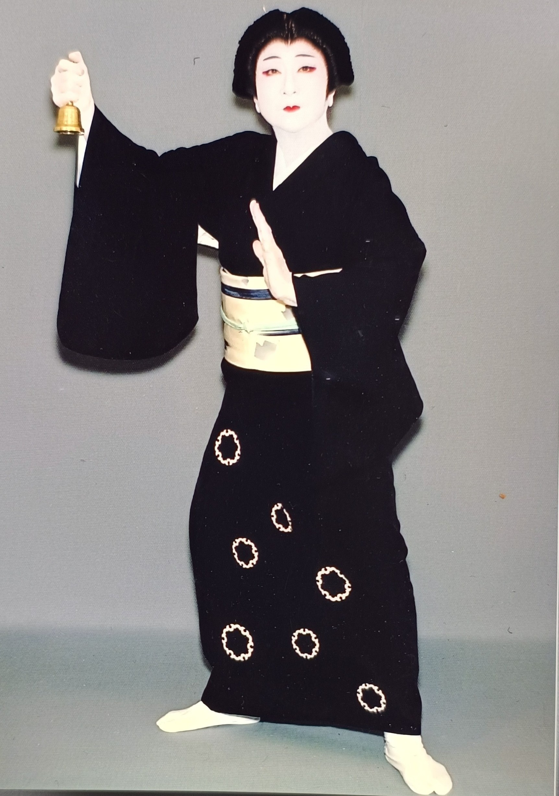

教室について
八舟会（はっしゅうかい）は、三味線と日本舞踊の伝統を大切にしながら、現代にも通じる表現を大切にする教室です。坂東流日本舞踊と藤本流民謡三味線の技を、丁寧に楽しくお伝えしています。
和の文化に触れながら、美しい所作や音を学びたい方、初めての方も大歓迎です。
当会は年に二回、八舟会として正月と夏に発表会を実施しています。また地域の発表会や施設ボランティアにも参加しています。
講師紹介


日本舞踊：坂東流師範「坂東 舟」として70年以上の日本舞踊歴を持ち、古典から新舞踊まで幅広い演目を舞台で披露してきました。坂東流は優雅で品格ある所作が特徴で、女性らしい柔らかな動きや流れるような振付が魅力の流派です。
三味線：藤本流大師範「藤本 富音八」として40年以上のキャリアを誇り、民謡だけでなく端唄、俗曲についても三味線の優しく繊細な響きを活かした指導を行っています。藤本流は正確な撥さばきと豊かな表現力に定評があり、日本各地の唄を通して三味線の深さを味わえる流派です。
本名：三井田 初枝（みいだ はつえ）
レッスン案内
- 楽譜が読めなくても大丈夫。初心者の方も一から丁寧にご指導します。
- マンツーマンレッスンでその方のレベルに合わせた指導を行います。礼儀も自然と身につきます。
- 基本的には月4回の月謝制です。スケジュール調整は柔軟に対応します。
生徒の声
「ずっと憧れていた三味線を始めて、毎週のレッスンが楽しみになりました！」（40代・女性）
「子どもが日本舞踊に夢中で、姿勢も良くなってきました」（30代・母）
アクセス
〒419-0107 静岡県田方郡函南町肥田927-10
最寄駅：伊豆箱根鉄道 伊豆仁田駅 車10分
JR東海道線 函南駅 車20分
駐車場：近隣に駐車スペースあり（2台）
お知らせ
- 2025年4月: 春の発表会を開催しました。ご参加ありがとうございました。
- 2025年3月: 初心者向け日本舞踊クラスを新設しました。体験受付中！